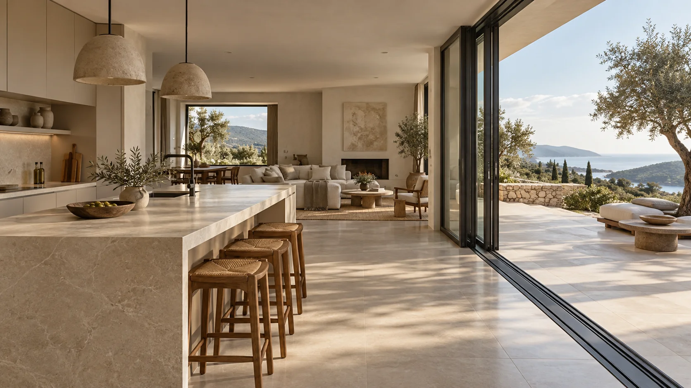
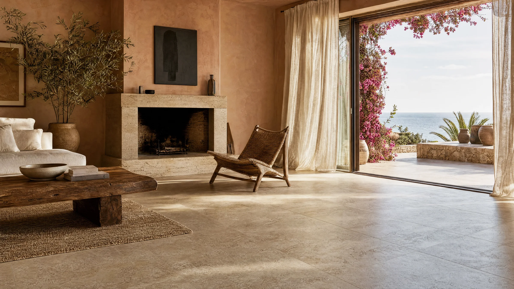
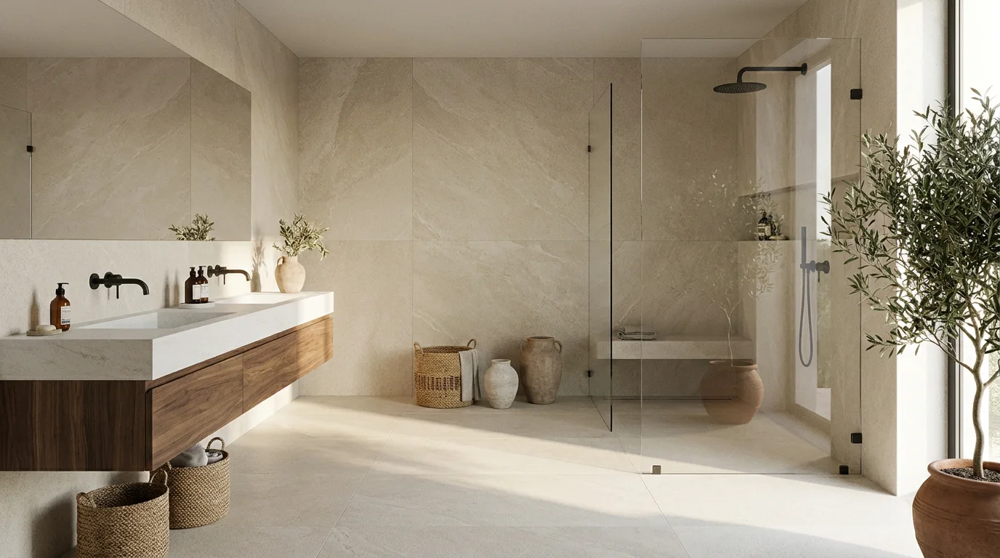

XAIXO HOME — GANDÍA
ESPACIOS
PARA VIVIRLOS.
Cocinas · Baños · Interiorismo · Materiales
IMAGEN DE INSPIRACIÓN
01 / LA FORMA DE HABITARLUZ. MATERIA. VIDA.
01 — NUESTRA MIRADAXAIXO HOME
NO DISEÑAMOS
ESTANCIAS.
DISEÑAMOS LA
FORMA DE VIVIRLAS.
Cocinas, baños, cerámica y ventanas.
En Xaixo Home te asesoramos en la elección de los materiales para tu hogar, con instalación propia en cocinas y ventanas.
02 — UN ESPACIO, TU FORMA DE VIVIR01 / 04
¿QUÉ
NECESITAS?



 AMBIENTE DE INSPIRACIÓN
AMBIENTE DE INSPIRACIÓN
El suelo y la pared, la base de todo.